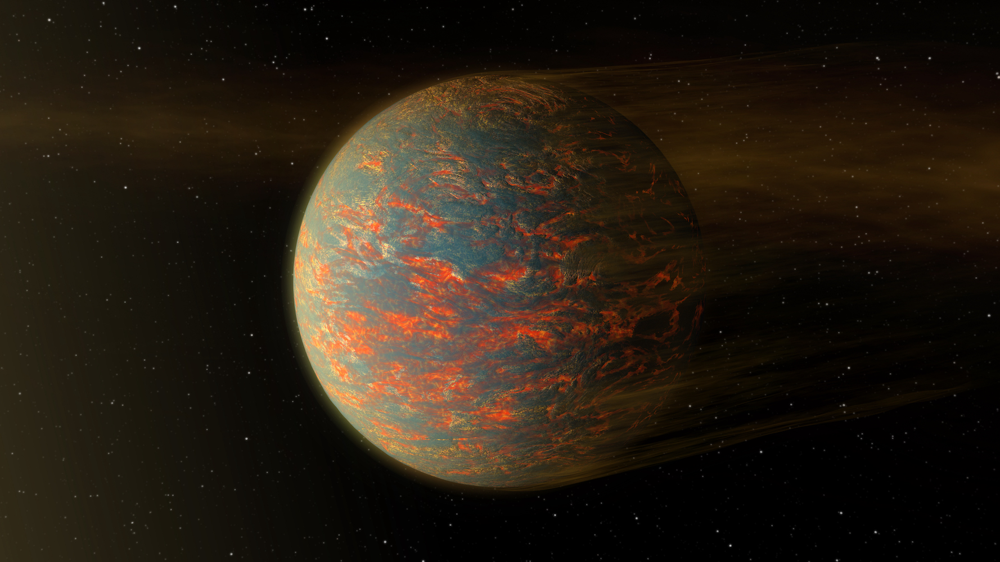
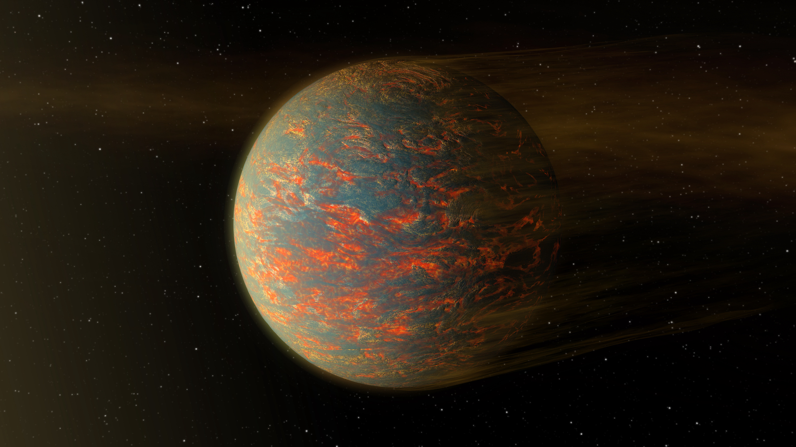

Intro
 I'm a third year PhD student at the University of St Andrews in the Schools of Physics and Astronomy
and Earth and Environmental Sciences.
My research is focusing on the effect of lighting on the atmospheric chemistry of Earth and other planets and
investigating its impact on the origin of life.
This includes Miller-Urey like sparking experiments and simulations of chemical processes in planetary atmospheres.
I'm a third year PhD student at the University of St Andrews in the Schools of Physics and Astronomy
and Earth and Environmental Sciences.
My research is focusing on the effect of lighting on the atmospheric chemistry of Earth and other planets and
investigating its impact on the origin of life.
This includes Miller-Urey like sparking experiments and simulations of chemical processes in planetary atmospheres.
High-energy radiation in planetary atmospheres
 We investigate the effect of stellar X-ray and UV (XUV) radiation, cosmic rays (CR), and stellar energetic particles
(SEP, mainly protons) on the atmospheric chemistry of the hot Jupiter HD 189733b and identify key signatures of these interactions.
We choose this planet because it is one of the best studied and observed exoplanets today, allowing us to optimize the model before
later applications to habitable worlds. We use 3D simulations of HD 189733b’s atmosphere for the pressure-temperature profiles and
XUV spectra of the host star from the MOVES collaboration. To model the chemical reactions, we use the STAND2019 network, which
includes ion-neutral C/H/N/O chemistry. We study in detail the formation of the amino acid glycine and its precursors. Our results
suggest that the CR and SEP influx enhances the formation of glycine, while XUV radiation leads to a depletion of glycine in the
upper atmosphere. We identify ammonium (NH4+) as an important signature of CR and SEP influx, even though the degree of ionization
of the atmosphere remains low. XUV radiation strongly ionizes the upper atmosphere, mainly producing H+ and He+. Ultimately, we show
that high energy processes increase glycine and precursor production and thus may potentially play an important role in prebiotic chemistry.
For more information please check out our paper (DOI, Arxiv).
We investigate the effect of stellar X-ray and UV (XUV) radiation, cosmic rays (CR), and stellar energetic particles
(SEP, mainly protons) on the atmospheric chemistry of the hot Jupiter HD 189733b and identify key signatures of these interactions.
We choose this planet because it is one of the best studied and observed exoplanets today, allowing us to optimize the model before
later applications to habitable worlds. We use 3D simulations of HD 189733b’s atmosphere for the pressure-temperature profiles and
XUV spectra of the host star from the MOVES collaboration. To model the chemical reactions, we use the STAND2019 network, which
includes ion-neutral C/H/N/O chemistry. We study in detail the formation of the amino acid glycine and its precursors. Our results
suggest that the CR and SEP influx enhances the formation of glycine, while XUV radiation leads to a depletion of glycine in the
upper atmosphere. We identify ammonium (NH4+) as an important signature of CR and SEP influx, even though the degree of ionization
of the atmosphere remains low. XUV radiation strongly ionizes the upper atmosphere, mainly producing H+ and He+. Ultimately, we show
that high energy processes increase glycine and precursor production and thus may potentially play an important role in prebiotic chemistry.
For more information please check out our paper (DOI, Arxiv).
Magma ocean evolution of the TRAPPIST-1 planets

Recent observations of the potentially habitable planets TRAPPIST-1 e, f, and g suggest that they possess large water mass fractions
of possibly several tens of weight percent of water, even though the host star's activity should drive rapid atmospheric escape.
These processes can photolyze water, generating free oxygen and possibly desiccating the planet.
After the planets formed, their mantles were likely completely molten with volatiles dissolving and exsolving from the melt.
To understand these planets and prepare for future observations, the magma ocean phase of these worlds must be understood.
To simulate these planets, we have combined existing models of stellar evolution, atmospheric escape, tidal heating, radiogenic heating,
magma-ocean cooling, planetary radiation, and water-oxygen-iron geochemistry. We present MagmOc, a versatile magma-ocean evolution model,
validated against the rocky super-Earth GJ 1132b and early Earth.
This model is part of the VPLanet code.
We simulate the coupled magma-ocean atmospheric evolution of TRAPPIST-1 e, f, and g for a range of tidal and radiogenic heating rates,
as well as initial water contents between 1 and 100 Earth oceans.
We also reanalyze the structures of these planets and find they have water mass fractions of 0–0.23, 0.01–0.21, and 0.11–0.24 for
planets e, f, and g, respectively.
Our model does not make a strong prediction about the water and oxygen content of the atmosphere of TRAPPIST-1 e at the time of mantle solidification.
In contrast, the model predicts that TRAPPIST-1 f and g would have a thick steam atmosphere with a small amount of oxygen at that stage.
For all planets that we investigated, we find that only 3–5% of the initial water will be locked in the mantle after the magma ocean solidified.
For more information please check out our paper (DOI,
Arxiv) and our GitHub repository.
We investigate the effect of stellar X-ray and UV (XUV) radiation, cosmic rays (CR), and stellar energetic particles
(SEP, mainly protons) on the atmospheric chemistry of the hot Jupiter HD 189733b and identify key signatures of these interactions.
We choose this planet because it is one of the best studied and observed exoplanets today, allowing us to optimize the model before
later applications to habitable worlds. We use 3D simulations of HD 189733b’s atmosphere for the pressure-temperature profiles and
XUV spectra of the host star from the MOVES collaboration. To model the chemical reactions, we use the STAND2019 network, which
includes ion-neutral C/H/N/O chemistry. We study in detail the formation of the amino acid glycine and its precursors. Our results
suggest that the CR and SEP influx enhances the formation of glycine, while XUV radiation leads to a depletion of glycine in the
upper atmosphere. We identify ammonium (NH4+) as an important signature of CR and SEP influx, even though the degree of ionization
of the atmosphere remains low. XUV radiation strongly ionizes the upper atmosphere, mainly producing H+ and He+. Ultimately, we show
that high energy processes increase glycine and precursor production and thus may potentially play an important role in prebiotic chemistry.
For more information please check out our paper (DOI, Arxiv).
 Recent observations of the potentially habitable planets TRAPPIST-1 e, f, and g suggest that they possess large water mass fractions of possibly several tens of weight percent of water, even though the host star's activity should drive rapid atmospheric escape. These processes can photolyze water, generating free oxygen and possibly desiccating the planet. After the planets formed, their mantles were likely completely molten with volatiles dissolving and exsolving from the melt. To understand these planets and prepare for future observations, the magma ocean phase of these worlds must be understood. To simulate these planets, we have combined existing models of stellar evolution, atmospheric escape, tidal heating, radiogenic heating, magma-ocean cooling, planetary radiation, and water-oxygen-iron geochemistry. We present MagmOc, a versatile magma-ocean evolution model, validated against the rocky super-Earth GJ 1132b and early Earth. This model is part of the VPLanet code. We simulate the coupled magma-ocean atmospheric evolution of TRAPPIST-1 e, f, and g for a range of tidal and radiogenic heating rates, as well as initial water contents between 1 and 100 Earth oceans. We also reanalyze the structures of these planets and find they have water mass fractions of 0–0.23, 0.01–0.21, and 0.11–0.24 for planets e, f, and g, respectively. Our model does not make a strong prediction about the water and oxygen content of the atmosphere of TRAPPIST-1 e at the time of mantle solidification. In contrast, the model predicts that TRAPPIST-1 f and g would have a thick steam atmosphere with a small amount of oxygen at that stage. For all planets that we investigated, we find that only 3–5% of the initial water will be locked in the mantle after the magma ocean solidified. For more information please check out our paper (DOI, Arxiv) and our GitHub repository.